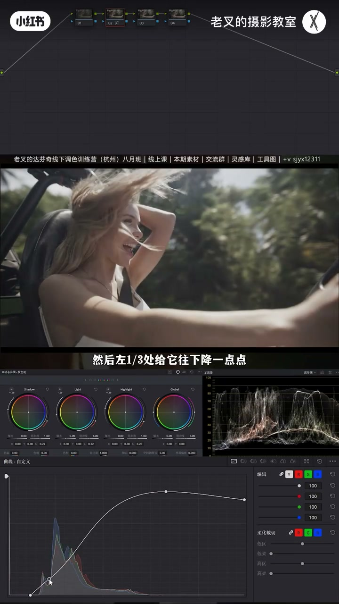
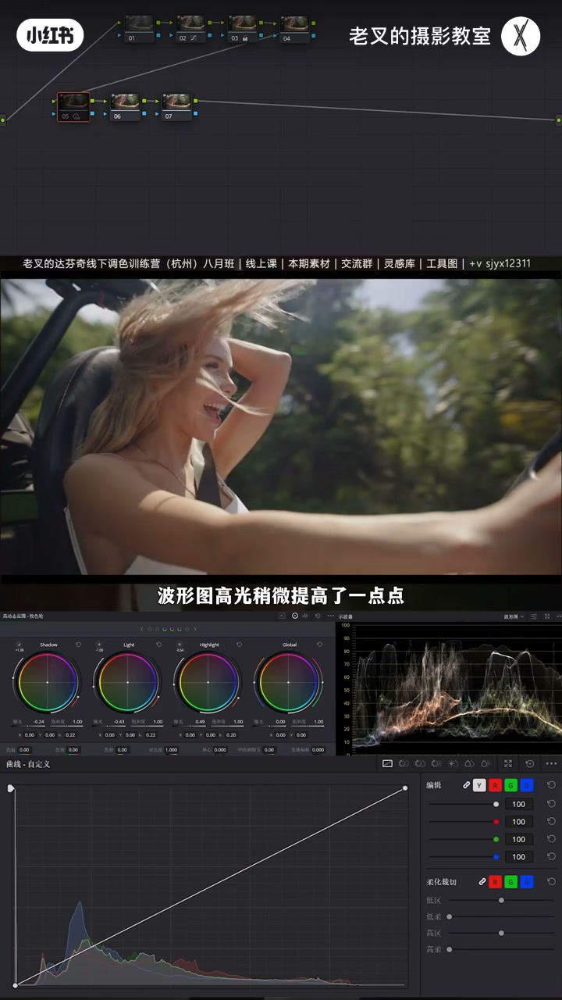
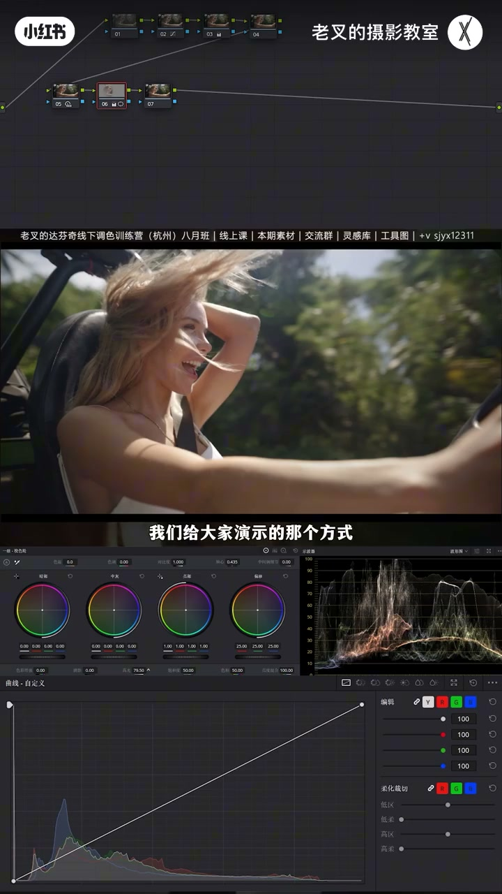
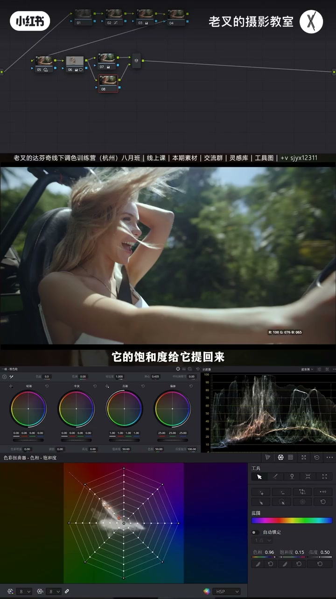
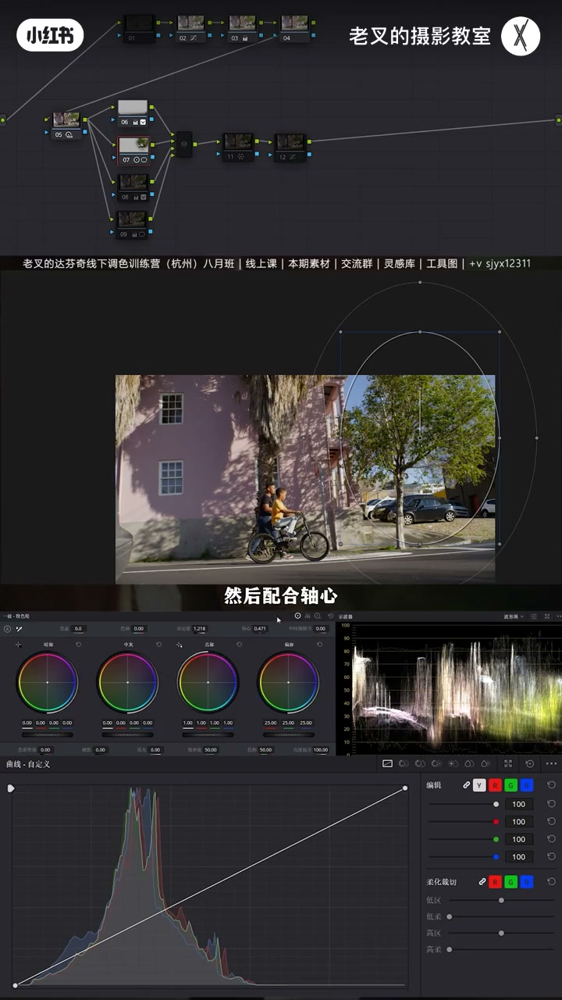

内容要点
晴天拍不出阳光感，往往不是高光不够亮，而是背光不够暗。老叉用两球对比说明：峰值曝光相同，靠其余更暗衬出高光。人眼对高光层次弱，波形未触顶超过约 90% 也可能「看起来像过曝」。做法是新曲线限定黑白场后，用 HDR 压 Light/Shadow、抬 Highlight；人物用圆∩渐变差集顺光提亮；颜色上全局加蓝并行找回肤色。普通斑驳光街景同理：先压其余留高光，再逐块压过亮马路与墙。
知识结构
两球右上峰值一样，暗部衬托显亮；难靠猛提高光做阳光。
高光端下压回约90、暗部碰约10，中间点调曝光且护两端。
渐变/单人遮罩提亮易怪；HDR 降 Light/Shadow、抬 Highlight 凸显受光。
圆∩渐变差集顺光提人物；并行全局加蓝、蜘蛛网拉回肤色。
同法压其余；遮罩压马路/侧区/墙；差集提人；柔和对比度+遮幅。
阳光感核心是「让光看得见」：先压背光与杂亮，再护/点提高光，并靠天空蓝等冷色统一。惨白一片等于废片；摄影是用光的艺术。
00:00-01:18立题：一样亮的高光，靠暗来衬
常有人问晴天镜头调不出阳光感。两球对比：多数人觉得左边右上更亮，实际两球右上曝光一样——其余更暗衬出了高光。曝光不是无限的，波形碰顶触底会过曝死黑，调色常故意留上下空间；但人眼对高亮层次远弱于暗部，高光超过约 90% 就可能看不出细节，与过曝无本质区别。所以很难靠大幅提高光让画面充满阳光，应考虑压暗背光面。
01:18-03:00新曲线还原：限定黑白场并拉开反差
有高光且层次要拉开时，他用新曲线法：先把高光端下压，目的是让高光回到约 90 左右（1% 点精确与否不重要）；暗部端右移碰到约 10%，1% 略降——黑白场限定且反差拉开。之后只需中间打点微调曝光，幅度不太大时高光暗部不易被突破，一举三得。再略加饱和；着色节点先控住。

03:00-05:10为何不渐变猛提：HDR 先压其余再找回高光
本片无法从右往左拉渐变强化阳光：一拉，不该亮的区域也被提亮。更不能单独给人画遮罩猛提——除非限定器/神奇遮罩二次限定，否则易怪；且玻璃高光已经够高。正确思路：除高光外其余往下降——HDR 降 Light 与 Shadow，再抬 Highlight 找回高光，并用左侧波杆改默认范围。波形高光只略抬，手臂受光却更凸显：没猛提也能强化受光面。

05:10-06:45人物：圆与渐变差集顺光提；并行加蓝护肤色
仍想提人物：圆形框人物（可略大）+ 从右上往左下的渐变，Shift+H 见二者并集；要点渐变的差集（谁被减点谁），并反转渐变方向使影响从右上衰减到左下，再提高光滑块——提亮像阳光照在身上，符合光衰减。
阳光感还要夏天感=天空蓝：蜘蛛网单独提蓝易不融。并行：上全局减色温加蓝（绿植多可略减色调加绿），下用蜘蛛网把肤色饱和拉回，冷调统一又护暖。蓝过强可后再降蓝饱和。最后柔和对比度：高光略压、样条线提回，暗部上提并压暗部波谷，减刺眼并带一点夏日胶感。

06:45-09:31普通斑驳光街景：同法压杂亮
有人说案例光本来就好、找不到模特——换成树叶斑驳照墙的普通街景。还原后很普通；同样 HDR 压 Light/Shadow、抬 Highlight，脸被强光打亮「亮成一片」会明显改善、细节出来。仍普通是因为马路、右侧、左侧墙都太亮：渐变/遮罩逐块加对比+轴心压暗；人物再用同样差集提亮；蜘蛛网让树叶更绿、偏绿地略往橙；柔和对比度，可加遮幅。
与还原对比质感明显。思路简单：想得到就能练。天气好随手一拍都类似，试操就掌握。摄影是用光的艺术——得让光看得见；惨白一片就是废片。本期完。


完整转录（337段）
以下文本由 Whisper medium 模型自动转录，可能存在少量识别误差，已尽可能修正。
大家有没有遇到过晴天拍摄的镜头调不出晴天的阳光感
这是我经常会收到的一个信息
阳光感到底要怎么去体现
比如说这个画面
大家可以对比一下这两个球
哪个球的右上角更亮
可以弹幕上投个票
我相信大部分人会觉得左边的更亮
不管你选的是哪一个
实际上两个球的右上角
它的曝光都是一样的
为什么左边会显得更亮呢
道理很简单
用其余部分的暗来衬托出了高光的亮
我们知道曝光调整它不是无限的
波形图上的分布
如果按照0到100的分类类型
碰顶触底就会过曝或者死黑
所以大家调色的时候
都会刻意的给上下流出一部分空间
可是不碰顶就不过曝吗
并不是的
人眼对高亮部分的层次分辨能力
要远弱于暗光部分
所以一般情况下
你的画面高光只要超过了90%
就有可能会看不出细节
哪怕你没碰到顶
而看不出细节就与过曝
没有本质的区别
我们很难通过大幅提高高光的方式
来让画面充满阳光
所以我们这个时候就要开始考虑
怎么去压暗背光面
比如说这个画面
我们先给它做下还原
那好多朋友最近都有问我
为什么用新的曲线方式来做还原
当画面中有高光
且整体的层次需要拉得比较开的时候
我就会用这个新的方法
怎么来呢
我们先把高光这一端往下
让它把高光保护住
然后在1%这个1%其实不重要
你说过来一点过去一点其实关系不大
我们目的是让高光能够走回到90左右
然后暗部也就是左下角这一端向右移动
让它能够碰到10%左右
然后1%给它往下降一点点
那么这个时候我们就给黑白位做好了限定
并且拉开了反差
如果此时我们觉得曝光需要调整
只需要在中间打个点去做微调就好了
此时只要我们曝光调整的幅度不会太大
高光和暗部你看
看播信图
高光和暗部它基本上不会被突破
也就是被保护住了
所以我们这个行为就是一举三得
我们既能定好黑白场
同时又能够拉开反差
第三个则是我们在调整曝光的时候
不用特别担心高光和暗部会受到影响
然后我们在3号节点给画面加一点点饱和度
饱和度加一点
好 我就到这里差不多
4号节点的着色先控制
画面没什么颜色需要去提前赋予的
来到第二排
我们对于这个画面
其实我们无法通过从右往左拉一个渐变遮罩
来强化阳光的
为什么这样说呢
我们拉拉看
我们拉个渐变遮罩
然后提高高光或者是任何的行为
你乍一看好像画面提亮了挺好看
可是像这一块的位置
它也被提亮了
所以这个方式并不合适
更不能给人物单独画一个遮罩去给它提亮
给人物单独画一个遮罩
就算你这个遮罩做特别到位
如果你不能很好的去使用
限定器或者神奇遮罩
再一次的限定好位置的话
你这个时候的提亮
就会让你的画面显得特别怪
这种提亮方式肯定是不可取的
并且我们看玻璃镜头
高光其实已经是比较高了
所以我们就要考虑压暗
怎么压暗
那自然是除了高光以外
其他部分都往下降
那很简单了
这时候我们用HDR色轮
降低Light色轮的曝光
同时也在降低Shadow色轮的曝光
好 我就到这里差不多
然后我们通过提高Highlight色轮的曝光的方式
来把高光给它找回来
我们可以通过每个HDR色轮的左边这里的波感
来改变色轮它的默认范围
好 我就到这里差不多
调整完我们看到波形图
高光稍微提高了一点点
但是从画面中女生的手臂上能够看到
这里的瘦光面是不是更加凸显出来了
也就是说我们在没有给高光做特别高的提亮的前提下
我们依旧能够去强化出这里的高光面
那如果有朋友说我还是想给人物去提亮
对吧
那我还是想画遮罩
那该怎么办呢
既然渐变或者圆形遮罩都不行
那我们就各自都来一个
什么意思
我们在后面跟一个节点
先用一个圆形遮罩
框选好我们要做的范围
也就是这个人物
的话可以开大一点点
然后我们再建立一个渐变遮罩
从右上就顺着光的方向
从右上往左下
那此时我们按住Shift加H
打开突出显示
能够看到此时画面中的遮罩范围
是两个遮罩的集合
我们需要让这个节点影响的范围
限定在这个圆形区域
也就是人物身上
所以我们需要利用到两个遮罩的叉戟
叉戟就可以通过点击每个遮罩右侧
它不是有两个按钮吗
点击右侧的这个按钮
那这样我们就可以给它做好了叉戟
那这个按钮该选哪个遮罩的呢
谁被剪就选谁
我们其实是要剪掉渐变遮罩右侧
这一部分影响的区域
对不对
不让这里的提亮影响到背景
所以呢
渐变遮罩就是我们需要减去的一个内容
那自然我们选择的这个叉戟的按钮
就选择了渐变遮罩的
但此时渐变遮罩的方向是反的
所以我们需要反转一下
让它的影响从右上慢慢衰减到左下
选好了范围之后
我们就只需要再给它提高一点高光滑快
我们可以通过画面的变化
看到没有
这种高光提高
就像是阳光照到女生的身上
这种感觉就会比起
开始我们给大家演示的那个方式
要更加自然
效果还是非常好的
人物就能够满足光衰减的特征来提亮了
那渐变遮罩嘛
对吧
然后就可以调颜色
强化阳光不能只靠曝光的调整
阳光感的核心
是让你感受到夏天的感觉
对吧
那也就是天空的蓝
我们可以在后面一个节点中
用蜘蛛网我们来看一下
能够通过蜘蛛网上选出蓝色的点
但是我们点击这里的这个点之后
这个蓝色提高会很怪
就是这种颜色的强化
它不够融合
因为我们没有考虑到全局的颜色变化
所以这时候我们可以来个并行节点
给上面这个节点中
让画面全局加蓝
也就是减色温
因为画面中有比较大面积的绿值
对吧
所以我们也可以再加一点点绿
也就是减一点色调
好 这里差不多
然后我们只需要在下面这个并行节点中
用蜘蛛网把肤色
它的饱和度给它提回来
那此时我们就能够更加自然的去让画面
除了暖色部分以外
其他的部分的颜色非常统一的往冷调去走
那当然如果你觉得这个蓝色太强
我们就只需要在后面来个节点
选出这里的蓝色
然后降低它的饱和度就可以了
你要改变它的色相
当然也没有问题
这都是可以根据你自己的喜好来
为什么不在前面去做
前面做太麻烦了
不直观
后面做会更加直观
最后我们只需要给它来一个柔和对比度
也就是高光这一端往下降
然后打开曲线的可编辑的样条线
把高光这一端往上提一点
然后提高暗部的这一端
把暗部的波感给它往下降
好 我觉得这里差不多
这个操作一方面能够让高光不会那么刺眼
另一方面我们提高比较多的暗部了之后
能够给画面带来一点夏日的焦感
是不是很简单
效果是非常好的
我们可以与还原后的画面来做一下对比
这是还原后的画面还不错实话讲
但是没那么优秀
我们调完了之后
就能够给画面带来一个非常好的一个效果
多说一句
这段时间有几位朋友
他想说我怎么让画面
这个绿质能够调出那种森绿的感觉
但是每次他调
它都会让画面变得墨绿
那这个时候你就可以尝试一下
我们这个并行节点的方式
你能看到这背景中的这些绿质
它都变成了这种带一点点蓝的绿了
而且很自然
这个只是多说一句的一个事情
还会有别的朋友会说
你这个画面本身光就很好
对光照到人身上
但是像他平时能拍到最好的天气
就是阳光透过树叶斑驳的光照到了墙面
像这种场景
我找不到你这么漂亮的模特该怎么办呢
也就是类似于这个画面
场景比较普通
那这个画面我们该怎么调
让它更有味道呢
我们可以快速的过一遍
大家可以看视频下方位置
把色彩领取过去之后一起去尝试一下
这个画面的还原后的效果是这个
那还原的方式跟之前是一样的
我就不多说了
还原好了之后能够看到
很普通
对吧 很普通
我们同样的
4号节点是先给它控制5号节点中
压按其余部分
留下高光
也就是用HDR色轮
降低Light色轮
降低Shadow色轮
然后提高Highlight色轮
这方法都是一样的
这样调完了之后
你能够看到整体好了不少对不对
而且我们在拍摄这种
人物脸上被强光照射的一个画面
很容易在还原后就出现这种情况
高光特别刺眼
这里亮成一片
我们用刚刚那个压按其余部分的方式
也能够在非常大的程度上去优化这个情况
对吧
你看人物脸上的细节都出来了
然后我们再看画面
虽然它好了很多
但还是很普通
为什么很普通呢
因为画面中亮的部分实在太多了
马路太亮了
右侧这一部分太亮了
左侧这个墙面也太亮了
这种亮就是不好看
所以我们需要给它们单独的再去压按
怎么压
那很简单
就是用遮罩一个个去画
先给马路画一个渐变遮罩
给它压按了
然后再是右侧这个区域也给它压按
我压按的方式都是用对比度加对比度
然后配合轴心
去让这里的曝光去做调整
左侧这里的墙面也是一样
稍微给它强化一下对比度
再然后就是人物
那人物呢
我们同样用差极的方式给它体谅
这个方式跟刚刚是一模一样的
我们就不多讲了
然后再用蜘蛛网
我这里的蜘蛛网的调整
我们可以看到有个这样的一个行为
这个行为目的是什么
一个就是让这里的树叶
让它稍微绿一点点
同时让下面这里的这块地
这块地原本有点偏绿不好看
让它稍微往橙色走一点点
最后同样的来一个柔和对比度
那效果具有了
对吧
我们可以用还原后的画面做一下对比
这是还原后的画面
这是我们调好的画面
这质感是非常棒的
如果说我们再给它来一个遮浮
那整体的味道就非常非常好了
思路很简单
只要你想得到
那这类镜头呢
大家其实啊
你的天气好
你随手一拍
你都能拍出类似的一个场景
对不对
时操一下这个思路
你就掌握了
因为它非常简单
我们都说摄影是用光的艺术
那你得让光看得见
对吧
如果惨白一片
那你这个就是废片了
好了
这期就到这里
886